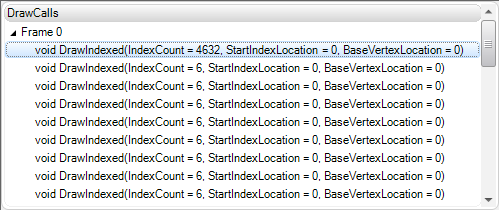

The draw call window of the Scrubber DX lists the captured DirectX frames and the corresponding draw calls (i.e. Draw(), DrawIndexed(), ...) made by the connected application.

Basic usage:
• Capture a frame from the connected application. After the capture completes, the tree will populate with the specified number of frames.
• Expand a frame item to view the draw calls for that frame.
• Click on a draw call to display the preceding API calls in the API Call pane. In addition, the emulator will update by rendering the scene up to and including the selected draw call.